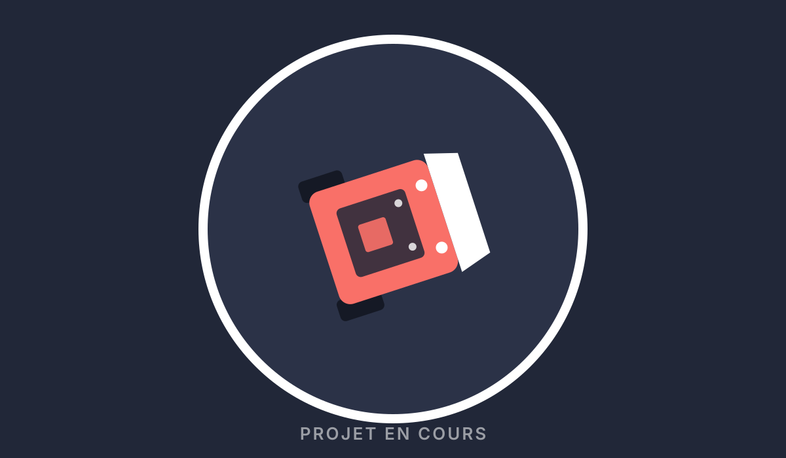

En cours
Électronique · Systèmes embarqués
Robot Sumo
Conception en équipe de cinq d'un robot sumo autonome, capable de détecter son adversaire et de le pousser hors du ring. Je participe à la conception, à la soudure et aux tests.
Voir le projet →